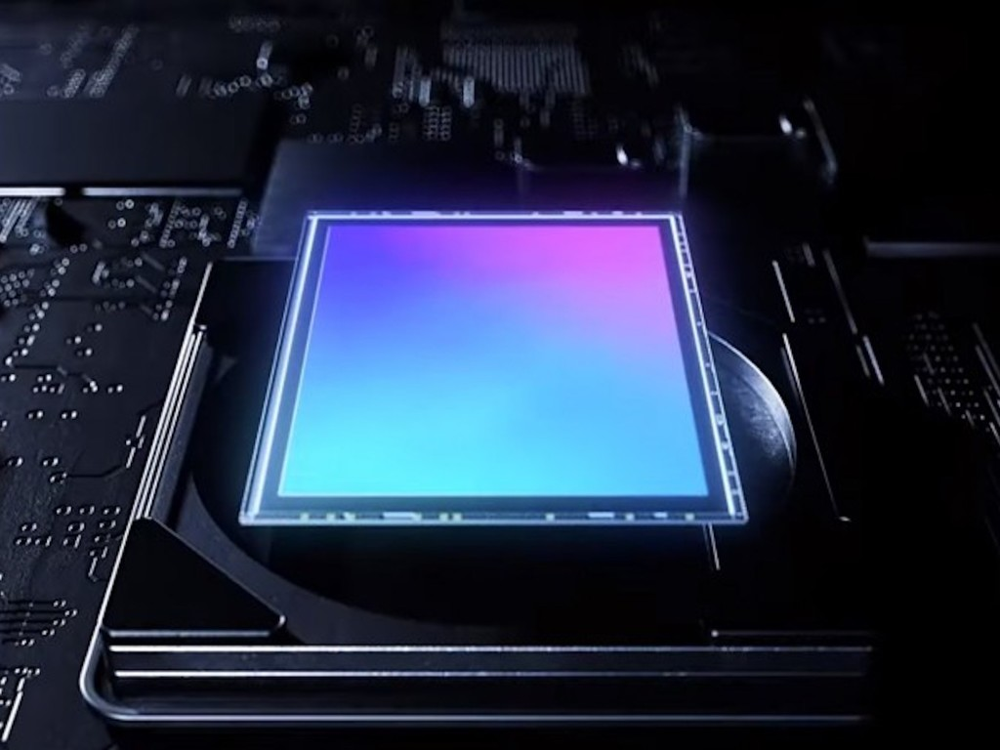

{% extends "base.html" %}
{% block current_app_content %}
    <h1>Samsung 正開發 2 億像素感光元件！預計明年初推出</h1>
    <br>
    
    <br><h3>
    <a><font color="#000000">繼小米和 Samsung 之後，今年陸續有更多手機採用 1 億拍攝像素鏡頭，智能手機的相片像素不斷提升，早前 Samsung 更表示打算開發出超越人眼極限的 6 億像素感光元件，相當誇張，不過在 6 億像素感光元件推出之前，有消息指 Samsung 已經正在開發 2.5 億像素感光元件，並預計來年初就會正式使用。</font></a>。
    <br>
    <br>
    <li>Samsung 已完成 1.5 億像素感光元件的開發</li>
    <li>正開發 2.5 億像素感光元件</li>
    <li>預計來年初採用</li>
    <br>
    <a><font color="#000000">根據消息人士指出，Samsung 現時已經完成了 1.5 億像素感光元件，預計今年下半年就可以量產使用，小米、Oppo 和 Vivo 預計也會採用，但傳聞指 Galaxy Note 20 和 Galaxy Fold 2 仍會採用 1.08 億像素感光元件。而 Samsung 的下一步就是開發 2.5 億像素感光元件，感光元件將增大至 1 吋，大幅提升吸光能力，使影像更清晰細緻，比起 6,400 萬像素感光元件的 1/1.72 吋、1.08 億像素感光元件的 1/1.33 吋大不少，不過鏡頭的大小和厚度估計也會相對增加。來年的 Samsung Galaxy S21 很大機會是首部 2.5 億拍攝像素手機，大家會否期待呢？
        <br>
        <br>
     </font></a>
    <br><br>
    <a href="{{ url_for('main.ipxs') }}"><font color="#9966ff">{{ _('【相關報道】Apple iPhone XS 勁劈至 HK＄3899！抵玩過 iPhone SE？') }}</font></a>
    <br>
    <a href="{{ url_for('main.winup') }}"><font color="#9966ff">{{ _('【相關報道】微軟推 Win 10 更新 大幅提升硬碟效能') }}</font></a></h3>
{% endblock %}